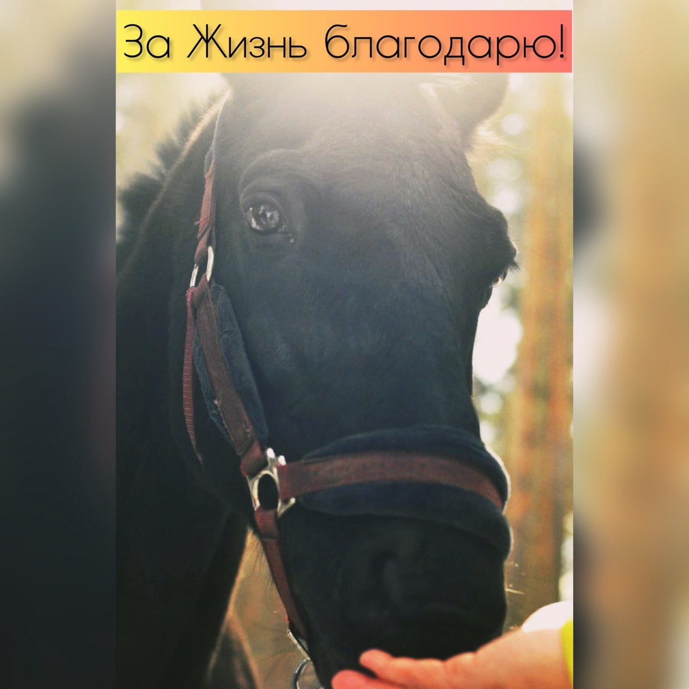

Это пост благодарности ❤
Доллар - конь чистых немецких кровей.
За свои 18 лет он привез много побед для своих всадников. Себе он заработал артрит, артроз и порванные связки. Его жизнь должна была закончиться в 2017 году, но вместо этого началась новая, а с ней и история Эко Парка.
В феврале 2017 года позвонили коневладельцы из Замка Гарибальди.
- Конь в критической ситуации, стоит на убой. Очень жалко. У него столько стартов за спиной. А еще он умеет «Да» и «Нет» говорить, делает поклоны и работает даже без уздечки. Бегать уже почти не может, хромает, но может вам подойдет для деток в иппотерапии?
Распространенная ошибка считать, что для занятий с больными детьми может подойти больная лошадь. Конечно, было понятно, что конь не рабочий, но в душе что-то из детства отзывалось.
А может мы его полечим и он поправится? А если нет, то придумаем что-нибудь. Людям кони дарят столько положительной энергии, разве это не должно быть взаимно? Пришло понимание, что если пройти мимо беды Доллара, то всё, во что веришь, напрасно.
⠀
Так началась новая жизнь Доллара. Вместе с ним мы начали знакомить людей с миром лошадей, создавать развивающие и игровые программы для садиков, школ и семейного досуга. Доллар демонстрировал поклоны, улыбался и приветливо махал головой.
⠀
Идея создания парка с разными видами животных, принадлежала Андрею Гранкину. Он проникся нашей историей и помог грамотным сопровождением в создании бизнес - модели, в которой задачи развития парка смогут осуществляться.
⠀
Сейчас в парке три коня и ослик, еноты, декоративные свинки, козы, барашки, кролики, разные птицы и рептилии. Все они нашли тут дом.
У каждого есть своя работа, животных обучают в Зоо школе разным трюкам.
⠀
Уже в первый год работы мы увидели, какие замечательные эмоции испытывают люди, приходящие к нам. Как нужно людям общение с животными.
⠀
Сегодня этот пост о вас, дорогие наши гости.
⠀
Мы благодарим вас за поддержку нашего проекта. За репосты, истории, отзывы.
За доверие к нам, за то, что выбираете нашу площадку для своих праздников, семейного досуга и развития.
⠀
Благодаря вам, Доллар видит своими прекрасными глазами мир, в котором он счастлив.
⠀
И способен сам дарить счастье другим ❤